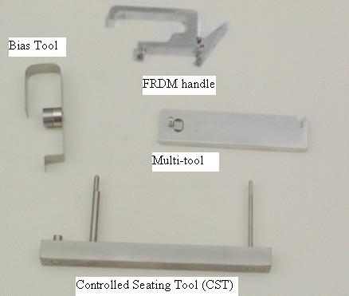

Illustration 1: Special Tools

The Handle is attached to the heat sink of the module to aid in removal and installation. The heat sink and digital screws can be used to lift the module out if the handle is not available. Newer modules may come with built in handles on the heatsink.
The Controlled Seating Tool is used while installing a module to make sure the alignment pins on the module are centered on the detector collimator to avoid any damage to the detector collimator plates during module insertion.
The Bias tool is attached via magnet to the detector rail after seating the new module. The Bias tool pushes the module against the back detector rail for proper alignment while the module screws are being torqued.
The Multi-tool is used to aid in clamping the wedge lock after insertion using the notch on one end and for removing light seal clips using the magnetized pin on the other end.